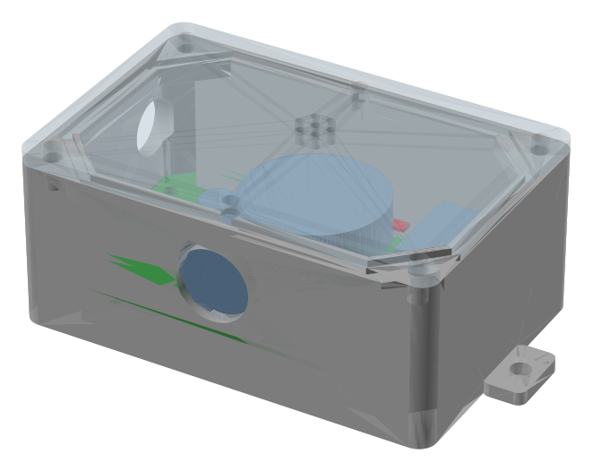
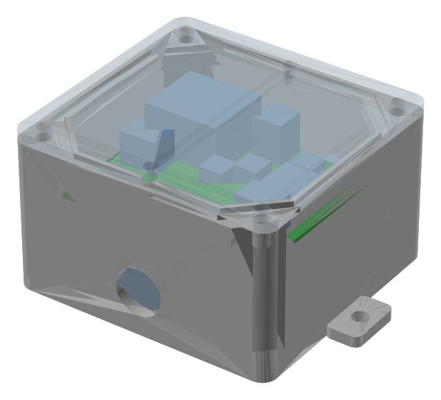

The GCU Platform
A Greenhouse Control Unit in every room that runs lights, climate, CO2 and irrigation on its own. Then choose how you watch over it: GCU Manager on a server at your facility, or GCU Cloud from anywhere.
Same Platform. On Site or in the Cloud.
Both products talk to the same GCUs, run the same grow programs and send the same alerts. The difference is where the software lives and who looks after it.
GCU Manager
A server at your facility. Your data never leaves the building.
- Runs on a compact appliance on your own network, with or without internet
- Built for large fleets: proven on a 76-room cultivation facility
- Grow programs, harvest records, crop photos and AI review of every room
- Integrator API for the software you already use
- Nightly local backups plus an encrypted offsite copy
GCU Cloud
Nothing to install. Sign in from a phone, tablet or computer.
- Every room on one screen, with plain-language status and 24-hour trends
- Control equipment, schedules, sensor rules and HVAC with confirmation from the GCU
- Grow programs, crop records and photos, email alerts and daily insights
- AI Insights: a nightly review of each room with the evidence behind every finding
- Hosted, secured, backed up and updated by us
| GCU Manager | GCU Cloud | |
|---|---|---|
| Where it runs | An appliance on your site network | Our hosted service |
| Internet required | No. Remote access is optional | Yes, for the GCUs to report in |
| Where your data lives | On your premises, backed up locally and offsite | In our secure, tenant-isolated service |
| Who maintains it | We support it remotely over an encrypted link | We run it entirely |
| Best for | Large facilities, data-residency needs, unreliable internet | One site or many, fast rollout, no IT on site |
| Grow programs, alerts, photos, AI review | Included | Included |
| Integrator API | Yes, with self-documenting reference | On request |
The Room Runs Itself. The Software Watches.
Every control decision is made by the GCU in the room, not by a server somewhere else. GCU Manager and GCU Cloud configure the rules, record what happens and show it to your team. If the network drops, the room carries on exactly as programmed.
- ✓ Schedules with sunrise and sunset ramps for lights
- ✓ Sensor rules that hold temperature, humidity, CO2 and VPD in range
- ✓ Grow programs that step through Clone, Veg and Flower on their own
- ✓ Timed irrigation runs with an on-time guard on every output
- ✓ Primary and backup sensors, so a drifting probe stands out
- ✓ Local alarm flasher and sounder when a room needs a person
Sense
CO2, temperature, humidity, light and leaf wetness arrive over a wired RS-485 Modbus bus. No batteries, no wireless dropouts.
Decide
The GCU compares readings with the program for today and switches lights, fans, cooling, dehumidifiers, CO2 and valves.
Report
Readings and every state change stream to GCU Manager or GCU Cloud, where your team sees, adjusts and keeps records.
Designed and Assembled by Legacy West Ventures
Purpose-built for grow rooms: sealed enclosures, wired field buses, and firmware we update ourselves. Every device is serviced and supported by the people who designed it.

GCU
- Runs schedules, sensor rules and grow programs on its own
- RS-485 Modbus bus for sensors, I/O modules and IR blasters
- Two 0-10 V dimming outputs for grow lights
- On-board alarm flasher and sounder
- Battery-backed clock, 24 VDC, single sealed M12 connection
- Sealed enclosure with clear lid for high-humidity rooms
- Local web page on site, Wi-Fi or wired network to the software
LWV-IO-4R2D New
- Four 10 A relays for fans, pumps, CO2 valves and dehumidifiers
- Two 0-10 V dimming outputs, sink or source, set in software
- Comms watchdog with a safe state per channel if the bus goes quiet
- Supply voltage, relay cycle counts and bus errors reported to the GCU
- 35 mm DIN-rail module, 24 VDC, firmware updates over RS-485

RS485 IR Blaster
- Lets the GCU set power, mode, temperature and fan on a mini-split
- Carrier, Samsung and Midea protocols built in
- Wired to the GCU bus: no Wi-Fi, no cloud account on the unit
- Built-in light and temperature sensors for a second reading at the head
- Firmware updates over the same cable
Sensors & Accessories
- CO2, temperature and humidity multi-sensor with calibration support
- Leaf wetness and light-level sensors
- Relay enclosures, power supplies and sealed M12 cable assemblies
- Managed LTE gateway for sites without internet (see Connectivity)
Container Farms, Pods and Grow Rooms
76-room cultivation facility
GCU Manager on site with a GCU in every pod: grow programs, harvest records, photos and AI review, all on the customer's own network.
Container farm fleets
GCU Cloud watching containers across several sites, with mini-splits driven by RS485 IR blasters and alerts to the grower's phone.
Research and licensed grows
Rooms that need tight day and night targets, VPD control and an audit trail of who changed what, and when.
Which One Fits Your Facility?
Tell us about your rooms, your network and how your team works. We will recommend GCU Manager, GCU Cloud, or a mix, and quote the whole system.
Talk to Us